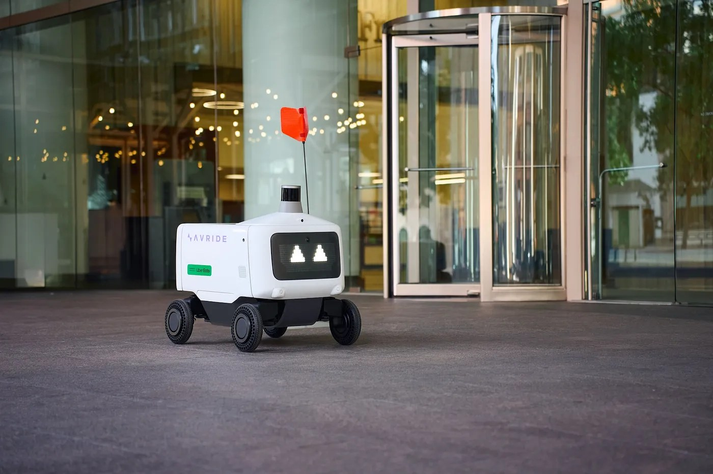

Инцидент произошёл на Filbert Street рядом с знаменитым Reading Terminal Market: по вызову свидетелей о «нарушении общественного порядка» приехали полицейские. Как сообщает WPVI, Марвин намеренно перегородила путь робототакси доставки Uber и игнорировала несколько требований офицеров освободить тротуар. После отказа её арестовали и обвинили в disorderly conduct — мелком хулиганстве. Видео конфронтации быстро разлетелось по соцсетям.
Марвин не скрывала мотивов: «Я знаю, что они забирают работу у живых курьеров, поэтому каждый раз, когда вижу их, протестую — встаю перед ними и не пускаю». Она считает свои действия легитимной демонстрацией на общественном тротуаре и уже не впервые сталкивается с роботами: в сентябре её стычка с роботом доставки на Broad Street тоже попала в ленты. Очевидица Эшли Болдуин рассказала, что сначала решила, будто робот сбил женщину, — та ответила: «Нет, я должна это остановить. Они захватывают мир».
Автономные курьеры — маленькие шестиколёсные устройства на тротуарах — стали привычным видом в даунтауне Филадельфии и давно вызывают раздражение части горожан: шумят, занимают тротуар, «отнимают хлеб». Это не единственный силовой эпизод: ранее в центре города робот Uber Eats получил пинок от прохожего, а другой врезался в машину. Обеспокоенность влиянием автономных систем — от рободоставки и роботакси до ИИ-агентов — на занятость растёт, и филадельфийская арестованная теперь фактически требует от города ответа на вопрос: где заканчивается право на протест и начинается воспрепятствование работе чужого имущества.
Отдельного официального анонса или заявления Uber по поводу ареста нет — компания публично комментирует только свою программу роботизированной доставки в городе. Основой для материала послужил оригинальный репортаж местной телекомпании WPVI (ABC) и пересказ The Verge. У Марвин, впрочем, планы широкие: «Буду протестовать дальше. А почему нет?»
За рубежом автономная доставка уже доехала до полицейских сводок — а в России роботы доставки Яндекс уже несколько лет ходят по московским тротуарам, и громких арестов вокруг них пока не случалось: видимо, привыкаем молча.